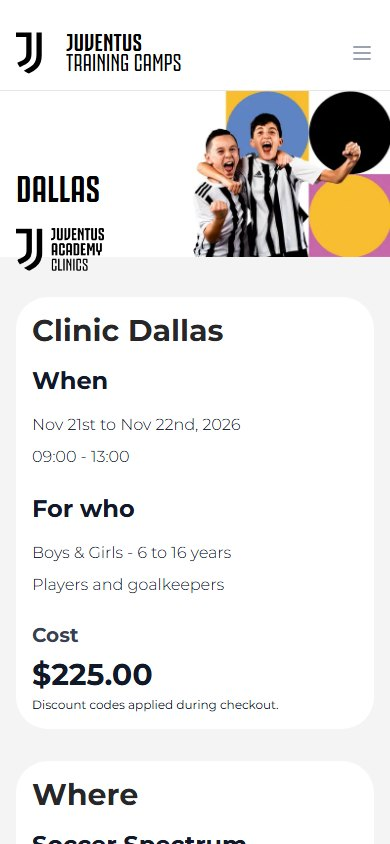
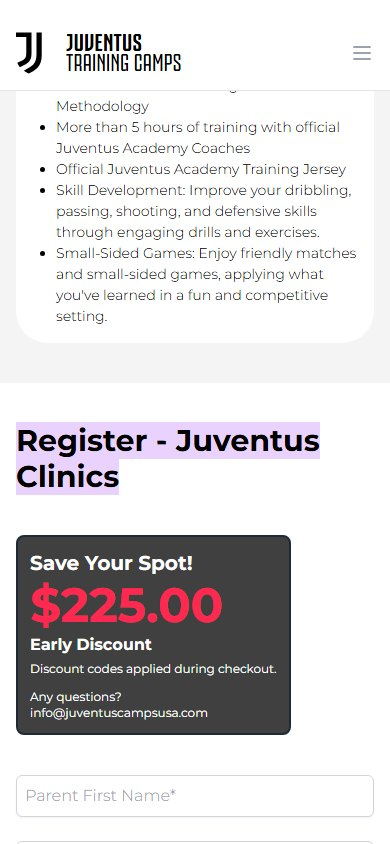

Cómo se ve
La mayoría de los padres abre el correo en el celular. El diseño es de una sola columna, con letra grande y el botón fácil de tocar. Las dos vistas son el correo real: al hacer clic en el botón "Register your player" (o en "Inscríbelo aquí") se abre, en una pestaña nueva, la página de Dallas tal como la vería el padre.
El texto
El correo va en inglés con un bloque en español al final (la base no tiene campo de idioma). Sin precio, sin urgencia y sin mencionar la camiseta.
Asunto A: Juventus coaches are coming back to Dallas
Asunto B: Dallas, Nov 21–22: train the Juventus way
Preencabezado: Coaches from Italy · Soccer Spectrum · Ages 6–16
Traducción para revisar (no se envía)
Si el contacto no tiene nombre guardado, el saludo sale como "Hi there,".
A quién se envía
Tres grupos de la misma zona, todos con correo y sin haberse dado de baja. Cada grupo tiene una razón distinta para recibirlo.
| Grupo | Por qué recibe este correo | Correos |
|---|---|---|
| Familias que ya pagaron un camp o clínica en años anteriores | Ya conocen la experiencia y confían en la marca: son quienes más probablemente vuelvan. | 272 |
| Registros sin pago de años anteriores | Mostraron interés real (empezaron a inscribirse) y no terminaron: el anuncio les da una nueva oportunidad. | 264 |
| Otros contactos de la zona (base de Constant Contact) | Padres de Dallas y alrededores que ya están en la base (clínicas, camps, listas anteriores) pero nunca compraron. | 487 |
| Total | 1.023 |
Además se quitan, con un export de la plataforma el mismo día del envío, las familias que ya pagaron el ID Camp de Dallas 2026-27 (hoy son 2): no tiene sentido invitarlas a algo que ya compraron.
Cómo se obtuvieron
- Cruce de bases (1-oct-2026): se unieron en una sola base los contactos de Constant Contact (43.597), Vozzi (SMS) y la plataforma de registro de camps y clínicas. Una persona es la misma si coincide su correo o su teléfono. Resultado: 52.436 personas únicas.
- Zona de Dallas: una persona es "de Dallas" si su teléfono tiene un código de área de la zona (214, 469, 972, 945, 817, 682) o si sus listas o su registro mencionan Dallas, Richardson, Plano, Frisco, Fort Worth, Arlington, Irving o Garland. Resultado: 1.565 contactos.
- Historial de compra: con la plataforma de registro se separó a quien pagó (307), a quien se registró sin pagar (315) y al resto (943).
- Solo correos válidos y sin baja: de los 1.565, 1.159 tienen correo; se quitan los 136 que se dieron de baja de los emails. Quedan 1.023.
- El día del envío: se quita a quien ya pagó Dallas 2026-27.
Los datos personales (nombres, correos y teléfonos) se manejan en archivos privados y no aparecen en esta página.
El botón lleva directo al pago
Hoy, al abrir la página de Dallas en el celular, el formulario de registro y pago queda a más de dos pantallas de distancia (la página mide unas 4 pantallas). El botón del correo usa un enlace que abre la página ya en la sección "Register - Juventus Clinics", con el precio y el formulario a la vista.


#:~:text=). Funciona en Chrome, Edge y Safari (iPhone con iOS 16.1 o superior), que es la gran mayoría de celulares. En navegadores que no lo soportan, la página se abre normal, arriba de todo: no se rompe nada. Antes de programar el correo se verifica con un envío de prueba desde Constant Contact que el enlace siga funcionando después de su seguimiento de clics.No requiere cambios en la página: el enlace funciona tal como está hoy y se puede usar también en SMS, WhatsApp y en los próximos anuncios de todas las sedes. (A futuro, como mejora opcional, un ancla propia en esa sección lo haría funcionar en el 100 % de los navegadores.)
Por qué este correo debería funcionar
- Abre con lo que gana la familia: entrenar con coaches que vienen de Italia sin salir de Dallas.
- Beneficios en lista, fáciles de leer en el celular; la experiencia en Italia se presenta como algo que se gana, no que se compra.
- Prueba social con una cifra real: más de 300 familias de la zona ya entrenaron con Juventus, acompañada de una foto real de niños del camp.
- Datos completos a la vista (fecha, horario, sede, edades) y un único botón.
- Cabecera con niños en acción y el skyline de Dallas, hecha en formato horizontal para que no se recorte.
- Medición: el botón lleva
utm_content=dal_email1para ver cuántas visitas y registros llegan por este correo.
Siguiente paso
Con la aprobación: se crea el borrador en Constant Contact con la lista de Dallas, se envía un correo de prueba interno para revisar nombre, enlaces e imágenes, y se programa a la hora acordada. Los envíos ya programados en Constant Contact no se tocan.